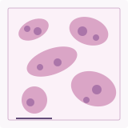

|
Zehua Wu I received my M.S.E. in Electrical Engineering from the University of Pennsylvania in 2026. My interests lie in software engineering, applied AI, and robotics, particularly in turning research ideas into reliable real-world systems. I worked as a Software Engineering Intern at Google on offline-first multimodal retrieval. I have also developed research software at Penn Medicine for AI-assisted digital pathology, built a full-stack agent-assisted ordering application, and studied industrial robot calibration and error compensation. |

|
Experience |
|
Google — Software Engineering Intern
| Jun. 2025 – Aug. 2025 Offline-First Multimodal Local Content Retrieval System Designed an offline retrieval pipeline spanning file I/O, parsing, embeddings, vector storage, and search. Supported 5 file formats, 10K+ local documents, and incremental indexing. Integrated BERT text embeddings and MobileCLIP image encoders with TensorFlow Lite and ChromaDB, achieving 85% Recall@10 and P95 latency under 300 ms. INT8 quantization reduced the model memory footprint by 67%. Developed Flutter tests and contributed to cross-platform integration and code review. Flutter, TensorFlow Lite, BERT, MobileCLIP, ChromaDB |
Selected Projects & ResearchMy work spans machine learning systems, full-stack engineering, medical imaging, and robot calibration. |
 |
TissueLab — AI Agentic System for Digital Pathology Penn Medicine · Zhi Huang Lab · Research Software Developer Dec. 2025 – Jun. 2026 website Implemented runtime exception handling and a unified API response contract for pathology workflows. Optimized Whole Slide Image (WSI) loading by 4.07× and orchestrated foundation models for necrosis, inflammation, and edema analysis. Integrated human-in-the-loop correction, achieving 92.6% agreement with pathologist hand grading; supported Docker/GitHub Actions CI/CD on GCP. Python · FastAPI · Node.js · OpenSeadragon · GPT-5 · GCP |
 |
OnlineOrder — Full-Stack Agent-Assisted Ordering Personal software project · Jan. 2025 – Apr. 2025 agent code Built an ordering system with Redis Lua atomic reservations, Kafka event processing, PostgreSQL persistence, WebSocket updates, and idempotent checkout. Load tests reached 1,458.82 QPS at 128.40 ms P99 with zero overselling. Developed an LLM tool-calling orchestrator with Redis-backed multi-turn sessions; across 300 evaluation scenarios, it achieved 91% tool-calling accuracy and 90% task success. Java · Spring Boot · FastAPI · PostgreSQL · Redis · Kafka · Docker |
|
Industrial Robot Positioning Accuracy Improvement NSFC-funded project (No. 51905258) · Nov. 2023 – Jun. 2024 Developed a modified Denavit–Hartenberg kinematic model for a Stäubli TX60 robot. Conducted multi-pose calibration using a Leica AT960 laser tracker, then applied optimization and neural-network compensation. Reduced end-effector position error by 90.42% and orientation error by 80.19%. MATLAB · Python · Kinematics · Parameter Identification · Neural Networks |
Publications & Patent |
| Research on Robot Parameter Identification Based on Black-winged Kite Optimization Algorithm IAENG International Journal of Computer Science, 2025. |
| Compensation of Industrial Robot Positioning Accuracy Based on Multi-layer Perceptron Instrument Technique & Sensor, 2025. |
| Robot Geometry Parameter Identification Method Based on Multi-Objective Differential Evolution Algorithm China Measurement & Test, 2024. |
| A Multi-Model Detection Method and System for Intelligent Transportation Patent publication No. CN116311100A, 2023. |
Education |
|
University of Pennsylvania, Philadelphia, USA M.S.E. in Electrical Engineering · School of Engineering and Applied Science Sep. 2024 – May 2026 · GPA: 3.44/4.00 |
|
Southeast University Chengxian College, Nanjing, China B.Eng. in Automation · School of Electronic and Computer Engineering Sep. 2020 – Jun. 2024 · GPA: 3.59/4.00 · Rank: 4/58 (Top 6%) |
Technical Skills |
|
Languages: Python, Java, C++, SQL, JavaScript Frameworks: Spring Boot, FastAPI, Flutter, React, Node.js, .NET, PyTorch Infrastructure: Redis, Kafka, ChromaDB, Docker, AWS, GCP Tools: Postman, MATLAB, Git, Codex, Keil MDK, Arduino |
Leadership & Service |
|
Student Volunteer — Institute of Dermatology, Chinese Academy of Medical Sciences Nanjing, China · Feb. 2021 – Apr. 2021 Coordinated a student volunteer team, assigned responsibilities, and provided on-site guidance and services. |
| Layout adapted from Jon Barron's academic website template. |